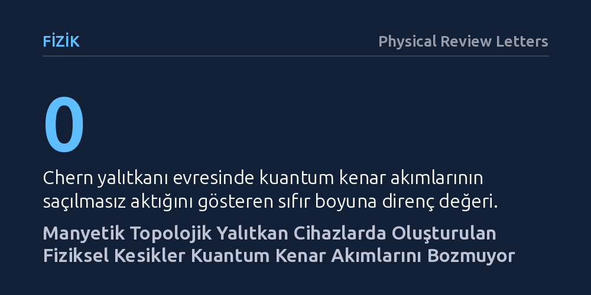

FIZIK · Physical Review Letters · 2026-10-09
Araştırmacılar, Chern yalıtkanı olan MnBi₂Te₄ kristalinde tek yönlü kuantum kenar akımlarının fiziksel hasarlara karşı gerçekten dirençli olup olmadığını inceledi. Atomik kuvvet mikroskobuyla tabana kadar derin bir kesik atılmasına rağmen malzemedeki kuantum Hall iletiminin ve kenar akımlarının korunduğu gösterildi.
Topolojik kuantum durumlarının kusurlara karşı kuramsal bağışıklığı ilk kez yapay fiziksel kesiklerle doğrudan doğrulanarak hataya dayanıklı kuantum devrelerinin yolu somutlaştırıldı.

Klasik elektronikte elektrik akımı iletilirken elektronlar malzeme içindeki safsızlıklara ve yapısal kusurlara çarparak saçılır; bu durum enerji kaybına ve ısınmaya yol açar. Topolojik yalıtkanlar adı verilen özel kuantum malzemelerinde ise kuramsal olarak elektronların yalnızca malzemenin sınırları boyunca ve tek bir yönde akabildiği kiral kenar durumları bulunur. Teoriye göre bu kenar akımları yollarına çıkan kusurlardan etkilenmez, çünkü elektronların geri dönüp saçılacağı fiziksel bir ters yön yolu bulunmaz.
Ne var ki kuramın öngördüğü bu kusursuz dayanıklılığın doğrudan deneysel olarak sınanması uzun süredir eksik kalmıştı. Bir malzemenin kenarında akan akımın, sadece mikroskobik pürüzlere karşı değil, malzemenin bizzat kesilip geometrisinin bozulması gibi ağır fiziksel hasarlara karşı da direncini koruyup koruyamayacağı bilinmiyordu. Bu sorunun deneysel yanıtı, gelecekte kararlı ve enerji kaybetmeyen kuantum cihazları geliştirmek isteyen araştırmacılar için kritik bir eşikti.
Araştırma ekibi bu dayanıklılığı test etmek için manyetik bir topolojik malzeme olan mangan-bizmut-tellür (MnBi₂Te₄) bileşiğini seçti. Cihaz önce orta düzeyde dikey bir manyetik alan altına yerleştirildi; bu koşulda malzeme Chern yalıtkanı evresine geçerek iç kısmı yalıtkan, kenarları ise kuantum düzeyinde iletken hale geldi. Bu evrenin belirleyici işareti, Hall iletkenliğinin kuantize bir platoya ulaşması ve eş zamanlı olarak boyuna elektriksel direncin tamamen sıfıra inmesidir.
Kuramsal dayanıklılığı zorlamak amacıyla ekibin attığı adım oldukça radikaldi: Atomik kuvvet mikroskobunun (AFM) aşırı sivri iğnesi mekanik bir kesici gibi kullanılarak cihazın üzerine yapay bir geometrik kusur işlendi. Bu nano-kesim işlemi yüzeysel bir çizik olmaktan öte, malzemenin en üst katmanından alttaki taşıyıcı tabakaya kadar uzanan derin ve net bir fiziksel yarık oluşturdu. Ardından bu yarığın akım iletimine etkisi iki uçlu, üç uçlu ve yerel olmayan çoklu elektriksel ölçümlerle adım adım izlendi.
Elde edilen sonuçlar, topolojik teorinin öngörülerini doğrudan doğruladı. Cihazın geometrisini kökten değiştiren ve taşıyıcı tabakaya kadar inen derin kesiğe rağmen, kuantize Hall direnci platolarını korudu ve boyuna direncin sıfır olma durumu bozulmadı. Yani elektronlar, önlerine çıkan bu büyük fiziksel engele takılmadan yeni oluşan geometrik sınırları takip ederek yollarına devam etti.
Farklı temas noktalarıyla yapılan iki uçlu, üç uçlu ve yerel olmayan elektriksel ölçümler de kenar akımlarının yapay kesiği başarıyla dolaştığını ve akışın kesintiye uğramadığını gösterdi. Akım, kesiğin etrafından dolanarak yeni kenar boyunca akmayı sürdürdü ve herhangi bir geri saçılma yaşanmadı. Bu bulgu, Chern yalıtkanlarındaki kiral kenar durumlarının yerel geometrik tahribatlara karşı ne denli sağlam olduğunu deneysel olarak kanıtladı.
Bu çalışma, topolojik kiral kenar durumlarının mikroskobik ölçekteki yapısal bozulmalara karşı dayanıklı olduğunu ilk kez kasıtlı ve kontrollü bir kesme deneyiyle gösterdi. Ayrıca atomik kuvvet mikroskobuyla yapılan nano-işleme tekniğinin, topolojik malzemeleri bozmadan biçimlendirmek ve özel geometriler oluşturmak için güvenilir bir yöntem olduğunu ortaya koydu.
Ancak elde edilen sonucun pratik uygulamalara dönüşmesi için aşılması gereken sınırlar bulunuyor. Deney harici bir manyetik alan altında ve laboratuvarın kontrollü ortamında gerçekleştirildi; oda sıcaklığında ve manyetik alansız çalışan sistemler için araştırmaların sürmesi gerekiyor. Yine de bu deney, geleceğin hataya dayanıklı kuantum devrelerinde kenar akımlarının güvenle yönlendirilebileceğine dair somut bir zemin sunuyor.